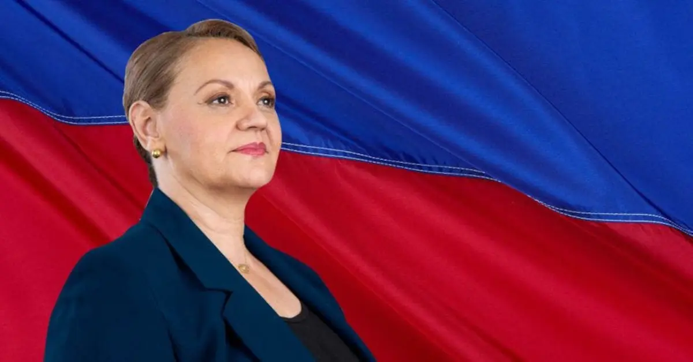

Sitio con la información sobre los 4 primeros candidatos a la presidencia de la republica según las encuestas
|  | |
|---|---|
| Bandera | Candidato | Resultados Encuesta 1 (%) | Resultados Encuesta 2 (%) |
|---|---|---|---|
|
María Lineth de la Trinidad Saborío Chaverri | 15.1 | 13.1 |
|
José María Figueres Olsen | 17.2 | 16.8 |
| Rodrigo Alberto de Jesús Chaves Robles | 6.2 | 5.4 | |
|
Gerardo Fabricio Alvarado Muñoz | 6.9 | 8.5 |